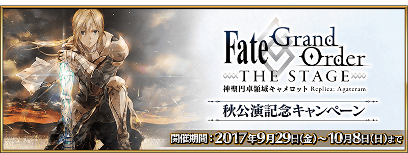
◆舉辦期間◆
2017年9月29日(五) 17:00～10月8日(日) 22:59
◆宣傳活動概要◆
2017年9月29日(五) 17:00～10月8日(日) 22:59的期間，為了記念舞台「Fate/Grand Order THE STAGE –神聖圓桌領域卡美洛–」的秋公演，實施「FGO THE STAGE 秋公演記念宣傳活動」！
在下述期間中，10天內連續登入的話，贈送合計聖晶石5個與大騎士勳章5個！
◆舉辦期間◆
2017年9月30日(六) AM3:00～10月10日(二) AM2:59
| 連續登入天數 | 贈送內容 |
|---|---|
| 第1天 | 聖晶石 1個 |
| 第2天 | 大騎士勳章 1個 |
| 第3天 | 聖晶石 1個 |
| 第4天 | 大騎士勳章 1個 |
| 第5天 | 聖晶石 1個 |
| 第6天 | 大騎士勳章 1個 |
| 第7天 | 聖晶石 1個 |
| 第8天 | 大騎士勳章 1個 |
| 第9天 | 聖晶石 1個 |
| 第10天 | 大騎士勳章 1個 |
※第1天的登入獎勵會從9月30日(六) AM3:00配發。
※之後的登入獎勵會在每天AM3:00配發。
※連續登入天數中斷的話，無法領取之後的禮物。
※最多能領取10次，但根據開始遊戲的時間點，可能無法到此上限。
迦勒底之門中，通過在下述的期間中出現的「Fate/Grand Order THE STAGE 秋公演記念關卡」公開記念關卡，得到關卡限定的概念禮裝吧！
※請注意在「Fate/Grand Order THE STAGE 秋公演記念關卡」並無劇本。
◆舉辦期間◆
2017年9月29日(五) 17:00～10月8日(日) 22:59
◆關卡開放條件◆
通過「特異點F 炎上汙染都市 冬木」的Master對象
◆「FGO THE STAGE 秋公演記念關卡」限定概念禮裝◆
| 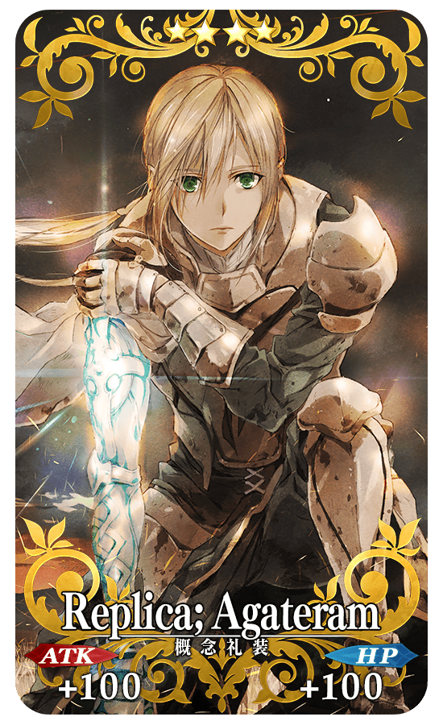 |
★★★★SR |
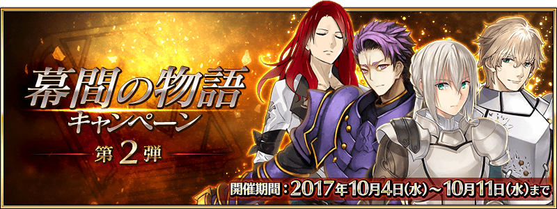
【10月4日(三) 17:00追記】
自10月4日(三) 17:00舉辦中的「幕間物語宣傳活動第2彈」，新追加於「第六特異點 神聖圓桌領域 卡美洛」活躍的高文、蘭斯洛特(Saber)、崔斯坦、貝德維爾的幕間物語。
無論如何別錯過幕間物語的AP消費優惠的這個機會！
「幕間物語宣傳活動第2彈」的詳情在此
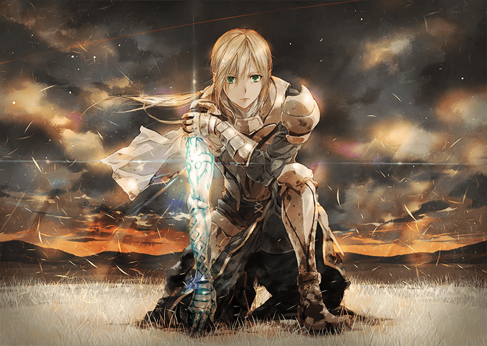
「Fate/Grand Order THE STAGE –神聖圓桌領域卡美洛–」為奈須きのこ擔任劇本撰寫本作的「第六特異點 神聖圓桌領域 卡美洛」做為原案舞台劇化。
舞台劇的印象視覺圖為擔任『Fate/Grand Order』開頭動畫角色設計的細居美恵子所繪製。自9月29日(五)舉辦秋公演。
【「Fate/Grand Order THE STAGE –神聖圓桌領域卡美洛–」概要】
■公演日
＜秋公演＞2017年9月29日(五)～10月8日(日)
■劇場:Zeppブルーシアター六本木
■官方網站: http://stage.fate-go.jp/
■官方推特: @fgothestage
【9月29日(五) 20:00追記】
「Fate/Grand Order THE STAGE –神聖圓桌領域卡美洛–」決定在GYAO!配信最終日LIVE！
◆LIVE配信
時間:10月8日(日) 11:00場/16:00場
事前販賣:自9月29日(五)開始
販賣金額:只有1公演(11:00場or16:00場擇一) 3,000円(含稅)
2公演套組 5,000円(含稅)
◆安可配信
時間:10月12日(木) 午後～10月15日(日) 22:59
販賣金額:3,000円(含稅)
※若購入LIVE配信可免費觀看。
視聴期間:從購入起算5天間
■GYAO!特設網站「ニゴステ(2.5次元ステージ)」
https://gyao.yahoo.co.jp/special/25stage/
◆「FGO THE STAGE 秋公演記念Pick Up召喚(每日交替)」期間◆
期間:2017年9月29日(五) 17:00～10月8日(日) 22:59
舉辦期間限定「FGO THE STAGE 秋公演記念Pick Up召喚(每日交替)」！
※未到達「第六特異點 神聖圓桌領域 卡美洛」的狀態也能進行「FGO THE STAGE 秋公演記念Pick Up召喚(每日交替)」。
本次「★5(SSR)李奧納多・達文西」以期間限定Pick Up！
另外，從於「第六特異點 神聖圓桌領域 卡美洛」活躍的Servant「★5(SSR)莫德雷德(Saber)」「★5(SSR)奧茲曼迪亞斯」「★4(SR)高文」「★4(SR)蘭斯洛特(Saber)」「★4(SR)崔斯坦」「★3(R)貝德維爾」Pick Up！
詳情請在聖晶石召喚畫面左下的召喚詳細確認。
※李奧納多・達文西在Pick Up期間結束後，不會追加到故事召喚。
※莫德雷德(Saber)、奧茲曼迪亞斯、高文、蘭斯洛特(Saber)、崔斯坦、貝德維爾在Pick Up期間結束後會在故事召喚抽出。
※請注意會以每日交替變更Pick Up的Servant。
Pick Up期間中，期間限定Servant、Pick Up Servant的出現機率提升！
10次召喚中確定1張★4(SR)以上和確定1位★3(R)以上的Servant！
※確定★4(SR)以上包含Servant和概念禮裝。
※所謂「出現機率提升」意指比同稀有度的Servant出現機率更高的設定。
| 每日交替Pick Up期間 | 每日交替Pick Up內容 |
|---|---|
| 9月29日(五) 17:00～22:59 | 李奧納多・達文西 莫德雷德(Saber) 奧茲曼迪亞斯 高文 蘭斯洛特(Saber) 崔斯坦 貝德維爾 |
| 9月29日(五) 23:00～ 10月1日(日) 22:59 | 李奧納多・達文西 高文 蘭斯洛特(Saber) 崔斯坦 貝德維爾 |
| 10月1日(日) 23:00～ 10月3日(二) 22:59 | 奧茲曼迪亞斯 高文 蘭斯洛特(Saber) 崔斯坦 貝德維爾 |
| 10月3日(二) 23:00～10月4日(三) 22:59 | 莫德雷德(Saber) 高文 蘭斯洛特(Saber) 崔斯坦 貝德維爾 |
| 10月4日(三) 23:00～10月5日(四) 22:59 | 李奧納多・達文西 莫德雷德(Saber) 奧茲曼迪亞斯 蘭斯洛特(Saber) 貝德維爾 |
| 10月5日(四) 23:00～10月6日(五) 22:59 | 李奧納多・達文西 莫德雷德(Saber) 奧茲曼迪亞斯 高文 貝德維爾 |
| 10月6日(五) 23:00～10月7日(六) 22:59 | 李奧納多・達文西 莫德雷德(Saber) 奧茲曼迪亞斯 崔斯坦 貝德維爾 |
| 10月7日(六) 23:00～10月8日(日) 22:59 | 李奧納多・達文西 莫德雷德(Saber) 奧茲曼迪亞斯 高文 蘭斯洛特(Saber) 崔斯坦 貝德維爾 |
※請注意會以每日交替變更Pick Up的Servant。
※Pick Up期間中，高文、貝德維爾、崔斯坦就算未通過章節也能入手。
介紹李奧納多・達文西、莫德雷德(Saber)、奧茲曼迪亞斯的寶具演出！
在Fate/Grand Order官方網站內的公告中，公開了「★5(SSR)李奧納多・達文西」「★5(SSR)莫德雷德(Saber)」「★5(SSR)奧茲曼迪亞斯」的寶具演出。敬請確認。

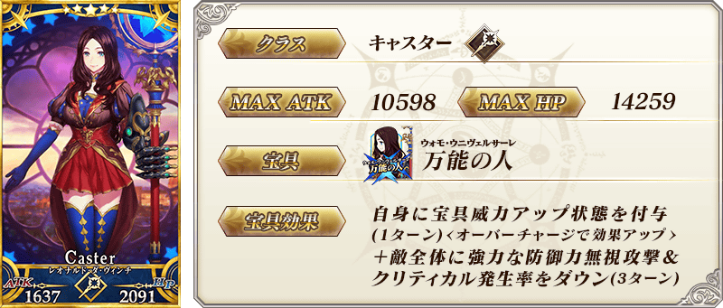

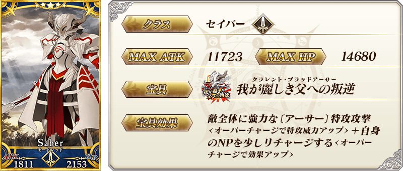

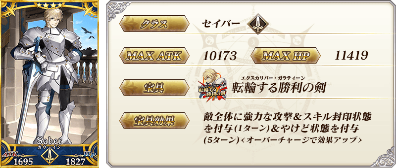
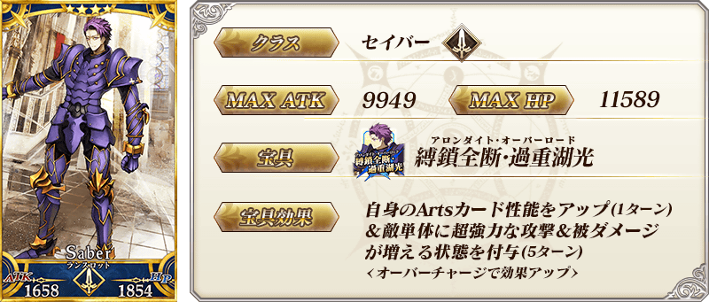

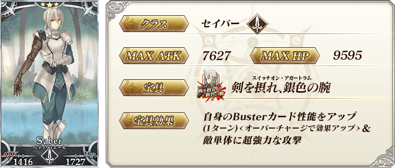
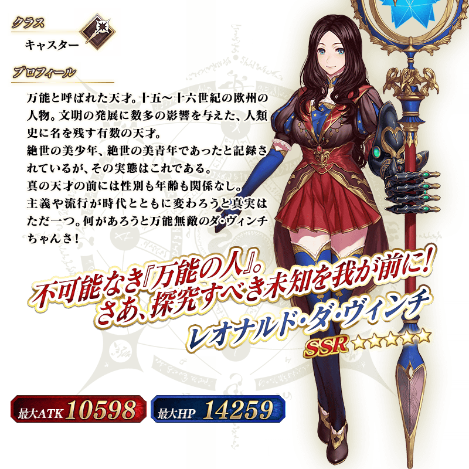
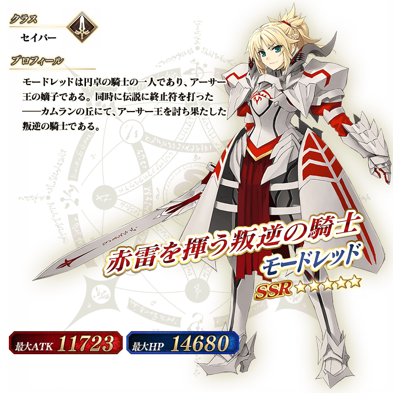
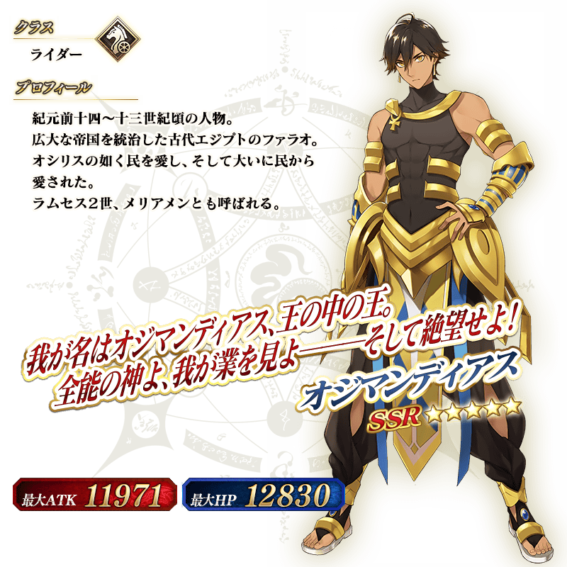